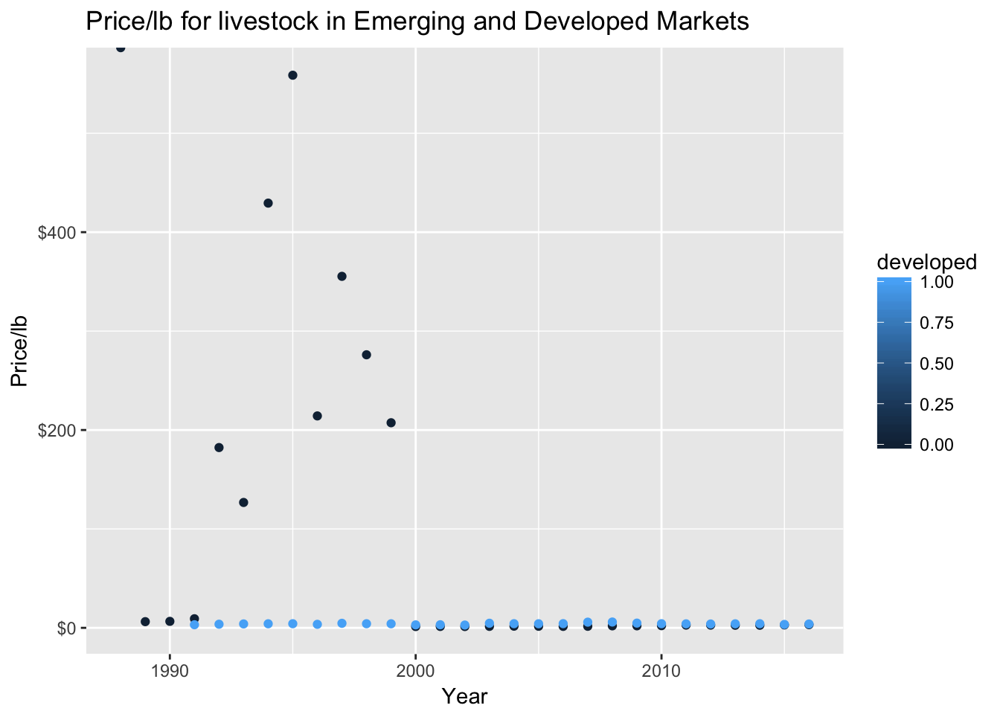
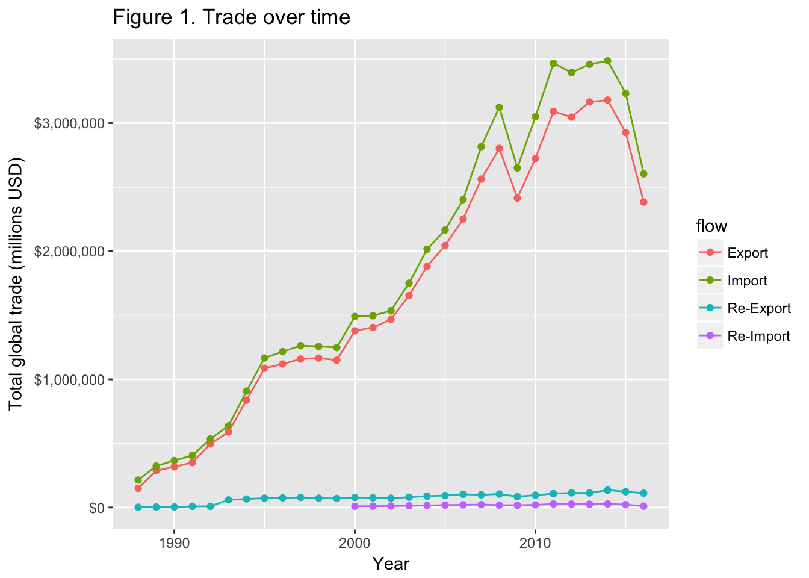
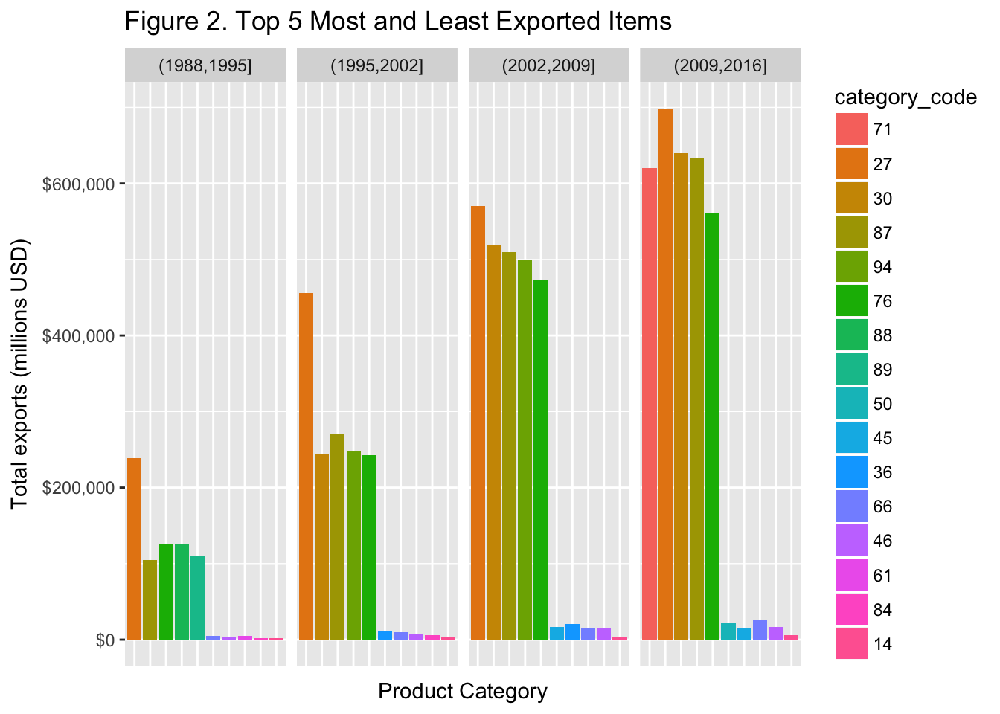

R Notebook
Global Trade Analysis
There has been a lot of media attention recently on the potential “trade war” brewing between the US and China. The goal of this tutorial is to apply data science to better understand how the global trade dynamics have changed over time, and what our current state is. By the end of this tutorial, you will be able to tell your friends why the amount of global exports crashed in 2014, and have a good idea about what the export level will be in the future.
1. Getting Started
1.1 Installing R
But before we can do all that cool stuff, we have to set up our environment first. For our tutorial today we will be using R. R is a free, open source, environment for data analysis. It is available as a free binary download for Mac, Linux and Windows. To install R in your computer go to https://cran.r-project.org/index.html and download and install the appropriate binary file.
1.2 Installing RStudio
In order to do our programming, we will be working with RStudio, a very powerful application that simplifies working with R. To install go to https://www.rstudio.com/products/rstudio/download/ and download the appropriate version of Rstudio.
1.3 Downloading the Dataset
The dataset that we are going to be working with in this analysis is Global Commodity Trade Statistics for 5,000+ commodities across most countries around the world over the last 30 years. The dataset was pulled from Kaggle.com, and orginially sourced from the United Nations Statistics Divison dataset. From the UN comtrade website, “The United Nations Commodity Trade Statistics Database (UN Comtrade) stores more than 1 billion trade data records from 1962. Over 140 reporter countries provide the United Nations Statistics Division with their annual international trade statistics detailed by commodities and partner countries. These data are subsequently transformed into the United Nations Statistics Division standard format with consistent coding and valuation using the UN/OECD CoprA internal processing system.” And with that, we’re ready to jump into the analysis!
2. Understanding the Data
The first part of any good data science project is understanding the data that you’re working with. This can be done both visually and through descriptive statitics. Because our dataset is so large and with such high variance between observations, we will mainly be focusing on visualizations.
2.1 Load Data
Before loading the data, we first need to load in a couple R packages. Packages are the fundamental units of reproducible R code. They include reusable R functions, the documentation that describes how to use them, and sample data. Now we can get started on loading in the data. A description for all the attributes can be found at COMTRADE UN
library(tidyverse)## ── Attaching packages ─────────────────────────────────────────────────────────────── tidyverse 1.2.1 ──## ✔ ggplot2 2.2.1 ✔ purrr 0.2.4
## ✔ tibble 1.4.2 ✔ dplyr 0.7.4
## ✔ tidyr 0.8.0 ✔ stringr 1.2.0
## ✔ readr 1.1.1 ✔ forcats 0.2.0## ── Conflicts ────────────────────────────────────────────────────────────────── tidyverse_conflicts() ──
## ✖ dplyr::filter() masks stats::filter()
## ✖ dplyr::lag() masks stats::lag()library(randomForest)## randomForest 4.6-14## Type rfNews() to see new features/changes/bug fixes.##
## Attaching package: 'randomForest'## The following object is masked from 'package:dplyr':
##
## combine## The following object is masked from 'package:ggplot2':
##
## margintrade_tab <- read_csv("commodity_data.csv") ## huge dataset, takes a couple minute to load## Parsed with column specification:
## cols(
## country_or_area = col_character(),
## year = col_integer(),
## comm_code = col_character(),
## commodity = col_character(),
## flow = col_character(),
## trade_usd = col_integer(),
## weight_kg = col_integer(),
## quantity_name = col_character(),
## quantity = col_integer(),
## category = col_character()
## )## Warning in rbind(names(probs), probs_f): number of columns of result is not
## a multiple of vector length (arg 1)## Warning: 41394 parsing failures.
## row # A tibble: 5 x 5 col row col expected actual file expected <int> <chr> <chr> <chr> <chr> actual 1 4107 quantity an integer 15513607967 'commodity_data.csv' file 2 13721 quantity an integer 2496187972 'commodity_data.csv' row 3 13747 quantity an integer 5755928743 'commodity_data.csv' col 4 13774 quantity an integer 11785578945 'commodity_data.csv' expected 5 13804 quantity an integer 6656167961 'commodity_data.csv'
## ... ................. ... ............................................................ ........ ............................................................ ...... ............................................................ .... ............................................................ ... ............................................................ ... ............................................................ ........ ............................................................
## See problems(...) for more details.colnames(trade_tab) ## attributes ## [1] "country_or_area" "year" "comm_code"
## [4] "commodity" "flow" "trade_usd"
## [7] "weight_kg" "quantity_name" "quantity"
## [10] "category"head(trade_tab) ## observations ## # A tibble: 6 x 10
## country_or_area year comm_code commodity flow trade_usd weight_kg
## <chr> <int> <chr> <chr> <chr> <int> <int>
## 1 Afghanistan 2016 010410 Sheep, live Expo… 6088 2339
## 2 Afghanistan 2016 010420 Goats, live Expo… 3958 984
## 3 Afghanistan 2008 010210 Bovine animal… Impo… 1026804 272
## 4 Albania 2016 010290 Bovine animal… Impo… 2414533 1114023
## 5 Albania 2016 010392 Swine, live e… Impo… 14265937 9484953
## 6 Albania 2016 010511 Fowls, live d… Impo… 2671732 254652
## # ... with 3 more variables: quantity_name <chr>, quantity <int>,
## # category <chr>2.2 Descriptive statistics
Just taking a quick peek, we can see that we have data about a lot of different countries, about a lot of different commodities that they either import/export, across a lot of time periods. If that sounds vague don’t worry, lets dig a little deeper and see how we can quantify some of these numbers.
min(trade_tab$year) ## What's the earliest available year?## [1] 1988max(trade_tab$year) ## Lastest year?## [1] 2016length(unique(trade_tab$country_or_area)) ## how many countries are in this dataset?## [1] 209length(unique(trade_tab$commodity)) ## How many different types of commodities are being traded? (hint: a lot)## [1] 5031## what is the average unique types of goods that a country exports?
trade_tab %>%
filter(year %in% c(1990,2015)) %>%
group_by(year,country_or_area) %>%
summarise(num_unique = n_distinct(category)) %>%
ungroup() %>%
group_by(year) %>%
summarise(average_count = mean(num_unique))## # A tibble: 2 x 2
## year average_count
## <int> <dbl>
## 1 1990 61.5
## 2 2015 63.65031 different categorical variables is 5031 too many categorical variables to deal with. Flippant hummor aside, lets see how we can break that down. Luckily, the dataset came with a “category” attribute as well, and there are only 10 of those (HW: how’d I get 10). The problem is that each of the categories are extremely long, so that is going to be a headache for data visualization down the road. Lets deal with that problem now with some pattern matching. Pattern matching is essentially pulling out parts of strings that you want, and R makes the entire process extremely easy with the stringr package
regex = "^[:digit:]*"
string = trade_tab$category
trade_tab <- trade_tab %>%
mutate(category_code = str_match(string,regex))
category_legend <- trade_tab %>%
select(category_code,category) %>%
group_by(category_code) %>%
slice(1)
category_legend ## # A tibble: 98 x 2
## # Groups: category_code [98]
## category_code category
## <chr> <chr>
## 1 "" all_commodities
## 2 01 01_live_animals
## 3 02 02_meat_and_edible_meat_offal
## 4 03 03_fish_crustaceans_molluscs_aquatic_invertebrates_ne
## 5 04 04_dairy_products_eggs_honey_edible_animal_product_nes
## 6 05 05_products_of_animal_origin_nes
## 7 06 06_live_trees_plants_bulbs_roots_cut_flowers_etc
## 8 07 07_edible_vegetables_and_certain_roots_and_tubers
## 9 08 08_edible_fruit_nuts_peel_of_citrus_fruit_melons
## 10 09 09_coffee_tea_mate_and_spices
## # ... with 88 more rowsWe will be using this category_code attribute in lieu of the orginial category attribute. The table above should be used as a reference for more detailed descriptions of each category throughout the tutorial.
2.3 Missing Data
One of the biggest headaches with data science is managing missing values. Missing values are coded as NA in R, which makes it easier for detection.
colSums(is.na(trade_tab)) ## NA observations## country_or_area year comm_code commodity
## 0 0 0 0
## flow trade_usd weight_kg quantity_name
## 0 15404 141058 0
## quantity category
## 318264 0 02.4 Developed vs. Emerging Market live animal trade
Before working on some of the more convoluted analysis, lets write a simple script to get a better understanding of the different popular commands, and the general syntax.
# First lets find all the different categories that involve chicken
test <- trade_tab %>%
filter(category_code=='01') %>%
filter(flow=='Export') %>%
filter(country_or_area %in%
c('USA','Germany','United Kingdom','China','Brazil','India','Russia')) %>%
mutate(developed = ifelse(country_or_area %in%
c('USA','Germany','United Kingdom'),1,0)) %>%
group_by(year,developed) %>%
summarise(price = (sum(as.numeric(trade_usd),na.rm = TRUE)/1000)/
(sum(as.numeric(weight_kg),na.rm = TRUE)/1000))
test## # A tibble: 55 x 3
## # Groups: year [?]
## year developed price
## <int> <dbl> <dbl>
## 1 1988 0 Inf
## 2 1989 0 6.26
## 3 1990 0 6.55
## 4 1991 0 9.20
## 5 1991 1.00 3.15
## 6 1992 0 182
## 7 1992 1.00 3.68
## 8 1993 0 127
## 9 1993 1.00 3.97
## 10 1994 0 429
## # ... with 45 more rowstest %>%
ggplot(aes(x=year,y=price,color=developed)) +
geom_point() +
scale_y_continuous(labels = scales::dollar) +
labs(title="Price/lb for livestock in Emerging and Developed Markets",
x = "Year",
y = "Price/lb") We can see from the print out and the graph that the price/lb for livestock has converged over time. In the early 90s, the price/lb for livestock being exported out of emerging markets was significantly higher than the price from developed markets. These prices have converged over time and now they are very similar. This was a good preliminary anaylsis for beginning to understand what the process looks like, now we can work on some exploratory analysis.
Exploratory Analysis
Exploratory analysis is the process of getting a better idea of what your data looks like (aka exploring your data). One of the key parts of this tutorial is the dollar amounts for trade from each country, so lets build a graph to better understand it.
colnames(trade_tab) ## attributes ## [1] "country_or_area" "year" "comm_code"
## [4] "commodity" "flow" "trade_usd"
## [7] "weight_kg" "quantity_name" "quantity"
## [10] "category" "category_code"head(trade_tab) ## observations ## # A tibble: 6 x 11
## country_or_area year comm_code commodity flow trade_usd weight_kg
## <chr> <int> <chr> <chr> <chr> <int> <int>
## 1 Afghanistan 2016 010410 Sheep, live Expo… 6088 2339
## 2 Afghanistan 2016 010420 Goats, live Expo… 3958 984
## 3 Afghanistan 2008 010210 Bovine animal… Impo… 1026804 272
## 4 Albania 2016 010290 Bovine animal… Impo… 2414533 1114023
## 5 Albania 2016 010392 Swine, live e… Impo… 14265937 9484953
## 6 Albania 2016 010511 Fowls, live d… Impo… 2671732 254652
## # ... with 4 more variables: quantity_name <chr>, quantity <int>,
## # category <chr>, category_code <chr>colSums(is.na(trade_tab)) ## NA observations## country_or_area year comm_code commodity
## 0 0 0 0
## flow trade_usd weight_kg quantity_name
## 0 15404 141058 0
## quantity category
## 318264 0 0min(trade_tab$year) ## The earliest year available is 1988## [1] 1988trade_tab %>%
group_by(year,flow) %>%
summarize(sum_trade = sum(trade_usd/1000000, na.rm=TRUE)) %>%
ggplot(aes(x=year, y=sum_trade, color=flow)) +
geom_point() +
scale_y_continuous(labels = scales::dollar) +
geom_line() +
labs(title="Figure 1. Trade over time",
x = "Year",
y = "Total global trade (millions USD)") Trade over time In the graph above, we observe the growth in global trade. We can see that that there are four different types of trade recorded in the dataset. Exports and imports have seen strong growth over the past 2 decades, but over the last several years seen a significant decline. Re-exports and re-imports have stayed relatively flat over the past 2 decades. One interesting takeaway is that global exports does not match global imports. Theoretically, the two should be equal, but the deficit is actually growing steeper. Taking exports to extraterrestrials out of the equation, the problem seems to boil down to overinvoicing imports and underinvoicing exports to lower firms’ tax bill. Later, we will look into what caused the steep drop in trade between 2014 and 2015. For now, lets see try to understand the data a little better and look into what exactly is getting traded between countries, and how that has evolved over time.
cut_year <- cut(trade_tab$year,4)
trade_items <- trade_tab %>%
mutate(cut_year=cut_year) %>%
filter(flow=='Export') %>%
filter(!(category %in%
c('99_commodities_not_specified_according_to_kind','all_commodities'))) %>%
## Find total exports for each category code for each 5 year period
group_by(cut_year,category_code) %>%
## Total will be in millions USD
summarize(category_sum = sum(trade_usd/1000000, na.rm=TRUE)) %>%
## Select top 5 and bottom 5 global exports
arrange(cut_year,desc(category_sum)) %>%
slice(c(1:5,(n()-4):n()))
## Reorder so that bar graph is in descending order
trade_items$category_code <- reorder(trade_items$category_code,
-trade_items$category_sum)
## Bar graph
trade_items %>%
ggplot(aes(x=category_code, y=category_sum,fill=category_code)) +
facet_grid(. ~ cut_year,scales="free_x") +
geom_col() +
scale_y_continuous(labels = scales::dollar) +
theme(axis.text.x=element_blank(),
axis.ticks.x=element_blank()) +
labs(title="Figure 2. Top 5 Most and Least Exported Items",
x = "Product Category",
y = "Total exports (millions USD)") In the bar graph above, we can see the top 5 most/least exported products during each 7 year time period between 1988 and 2016. Across all 4 periods, the most exported product category was “mineral_fuels_oils_distillation_products_etc”, followed closely by pharmaceutical products and then “vehicles other than railways”. In order to better understand these product categories, we can compare our findings with a list of the world’s most exported products. Our results seem to align with the online database. Now that we have a better understanding of the product categories driving global trade, lets dive into what caused the crash in 2014.
Deep Dive into Exports
My approach to solving this problem is to measure the year over year change in amount of exports for each product category both nominally and as a percent change. Using both analyses will allow us to identify which products had the most influence on exports, as well as which products a significant crash in export. But first, we have to wrangle the data into the correct format.
## Total amount of global exports annually, in millions
total_trade <- trade_tab %>%
filter(flow == 'Export') %>%
group_by(year,category_code) %>%
summarise(total_trade = sum(trade_usd/1000000,na.rm = TRUE))
## Convert df to a wife_df by spread out each year as an individual attribute
trade_wide_df <- total_trade %>%
select(category_code, year, total_trade) %>%
tidyr::spread(year, total_trade)
## Drop the first column
trade_matrix_1 <- trade_wide_df %>%
select(-category_code) %>%
as.matrix() %>%
.[,-1]
## Drop the last column
trade_matrix_2 <- trade_wide_df %>%
select(-category_code) %>%
as.matrix() %>%
.[,-ncol(.)]
## Perform some matrix operations with matrices 1 and 2 to find the yoy % change in exports
trade_percent_change <- (trade_matrix_1 - trade_matrix_2)/trade_matrix_2 %>%
magrittr::set_colnames(NULL) %>%
as_data_frame()
## Perform some matrix operations with matrices 1 and 2 to find the yoy nominal in exports
trade_nom_change <- (trade_matrix_1 - trade_matrix_2) %>%
magrittr::set_colnames(NULL) %>%
as_data_frame()
## Unknown error when doing mutate with previous pipes
trade_percent_change <- trade_percent_change %>%
mutate(category_code = trade_wide_df$category_code)
trade_nom_change <- trade_nom_change %>%
mutate(category_code = trade_wide_df$category_code)
## Fix column names
names(trade_percent_change)[1:28] <- 1989:2016
names(trade_nom_change)[1:28] <- 1989:2016Now that the data is in the correct format, we can plot the data and analyze the results for both nominal and percent changes.
## Analyze nominal changes in exports
trade_nom_change_2 <- trade_nom_change %>%
gather(year,nominal_change,-category_code)
trade_nom_change_3 <- trade_nom_change_2 %>%
transform(nominal_change = as.numeric(nominal_change)) %>%
transform(year = as.numeric(year))
trade_nom_change_4 <- trade_nom_change_3 %>%
## only look at 4 most recent years
filter(year >= 2012) %>%
filter(!(category_code %in% c('','99'))) %>%
## Select top 5 and bottom 5 percent movers
arrange(year,desc(nominal_change)) %>%
group_by(year) %>%
slice((n()-4):n())
## Reorder so that bar graph is in descending order
trade_nom_change_4$category_code <- reorder(trade_nom_change_4$category_code,
-trade_nom_change_4$nominal_change)
## Bar graph
trade_nom_change_4 %>%
ggplot(aes(x=year, y=nominal_change,fill=category_code)) +
geom_col() +
geom_text(aes(label=category_code),colour="white", check_overlap = TRUE,
position = position_stack(vjust = 0.5)) +
scale_y_continuous(labels = scales::dollar) +
labs(title="Figure 3. Top 5 Products that brought down exports",
x = "Product Category",
y = "Year over year decline in exports (millions USD)") +
guides(fill=guide_legend(title="Category Code")) In Figure 3 above, we can see a breakdown of which products brought down exports the most over the past 5 years. One interesting observation is that there is no one product that consistently contributes to a decline in exports. The bottom 5 exports seems to shift every year, but produts in the 70s range seem to appear semi-regualrly.
In Figure 3 above, we can see a breakdown of which products brought down exports the most over the past 5 years. One interesting observation is that there is no one product that consistently contributes to a decline in exports. The bottom 5 exports seems to shift every year, but produts in the 70s range seem to appear semi-regualrly.  . It seems that all of the products that fall in the 70s category are raw commodities. Doing some outside research, it seems that this general downtrend over the past couple of years was due to a global drop in the commodities market. Finally, looking at 2016, we can see that it was a clear outlier in terms of perfromance and the categories that dragged down exports. 30 and 38 are pharmaceutical drugs and “miscellaneous chemical products”. I found it very interesting that global exports of pharmaceuticals jumped down $75 billion over the course of one year, when it wasn’t even in the bottom 5 for the past 5 years. For anyone interested in digging deeper, here is some additional analysis on the pharma market. Lets see how these numbers compare the the relative change analysis.
. It seems that all of the products that fall in the 70s category are raw commodities. Doing some outside research, it seems that this general downtrend over the past couple of years was due to a global drop in the commodities market. Finally, looking at 2016, we can see that it was a clear outlier in terms of perfromance and the categories that dragged down exports. 30 and 38 are pharmaceutical drugs and “miscellaneous chemical products”. I found it very interesting that global exports of pharmaceuticals jumped down $75 billion over the course of one year, when it wasn’t even in the bottom 5 for the past 5 years. For anyone interested in digging deeper, here is some additional analysis on the pharma market. Lets see how these numbers compare the the relative change analysis.
## Analyze percent changes in exports
trade_percent_change_2 <- trade_percent_change %>%
gather(year,percent_change,-category_code)
trade_percent_change_3 <- trade_percent_change_2 %>%
transform(percent_change = as.numeric(percent_change)) %>%
transform(year = as.numeric(year))
trade_percent_change_4 <- trade_percent_change_3 %>%
## only look at 4 most recent years
filter(year >= 2012) %>%
filter(!(category_code %in% c('','99'))) %>%
## Select top 5 and bottom 5 percent movers
arrange(year,desc(percent_change)) %>%
group_by(year) %>%
slice((n()-4):n())
## Reorder so that bar graph is in descending order
trade_percent_change_4$category_code <- reorder(trade_percent_change_4$category_code,
-trade_percent_change_4$percent_change)
## Bar graph
trade_percent_change_4 %>%
ggplot(aes(x=year, y=percent_change,fill=category_code)) +
geom_col() +
geom_text(aes(label=category_code),colour="white", check_overlap = TRUE,
position = position_stack(vjust = 0.5)) +
scale_y_continuous(labels = scales::percent) +
labs(title="Figure 4. Top 5 products with the worst growth",
x = "Product Category",
y = "Change in exports year over year (%)") +
guides(fill=guide_legend(title="Category Code")) In line with the nominal analysis, we can see that products in the 60s/70s seemed to have the most negative yearly growth rate. Similar to the nominal analysis, the products that saw the steepest growth declines in 2016 were very interesting as well. 43 and 93 represent guns and furs accordingly. Both of these items are actively protested against, so it is interesting to see that effect take place in global trade data.
In line with the nominal analysis, we can see that products in the 60s/70s seemed to have the most negative yearly growth rate. Similar to the nominal analysis, the products that saw the steepest growth declines in 2016 were very interesting as well. 43 and 93 represent guns and furs accordingly. Both of these items are actively protested against, so it is interesting to see that effect take place in global trade data.
Linear Regression
Now that we understand how global exports has trended over time and seen which categories caused it to move both up and down, lets see if we can predict what the exports are going to be for any given country in the next year, on average. In order to do this, we are going to fit a linear regression. We start with the data from the last section that has the changes in the exports.
lag1 = function (x) c(NA, x[1:(length(x)-1)])
trade_linear <- trade_nom_change_3 %>%
group_by(year) %>%
summarise(average_change = mean(nominal_change,na.rm = TRUE))
## Add a lagged variable to our dataset
trade_linear_2 <- trade_linear %>%
mutate(lagged = lag1(trade_linear$average_change))
## fit our linear model
model <- lm(average_change ~ lagged + year, data=trade_linear_2)
summary(model)##
## Call:
## lm(formula = average_change ~ lagged + year, data = trade_linear_2)
##
## Residuals:
## Min 1Q Median 3Q Max
## -4656.4 -1056.0 57.3 1399.5 3953.9
##
## Coefficients:
## Estimate Std. Error t value Pr(>|t|)
## (Intercept) 1.348e+05 1.039e+05 1.298 0.207
## lagged 2.227e-01 2.421e-01 0.920 0.367
## year -6.701e+01 5.183e+01 -1.293 0.208
##
## Residual standard error: 2086 on 24 degrees of freedom
## (1 observation deleted due to missingness)
## Multiple R-squared: 0.1047, Adjusted R-squared: 0.03005
## F-statistic: 1.403 on 2 and 24 DF, p-value: 0.2654Hypothesis Testing
Now that we have our linear model, we have to conduct hypothesis testing to determine whether or not the model is significant. Because we have a multiple linear regression, we will be conducting a F-test to determine whether or not the model has more predictive ability than just having a model with . Our hypothesis is:
Random Forest Application
Our approach is going to be using a Random Forest machine learning algorithm to predict whether or not the amount of goods exported is goign to go up or down in the next year. The algorithm works by constructing multiple decision trees and then using the mean prediction of the indiivudal trees. In this first step, we will just be setting up the data. For the analysis I chose to only use data up to 2010 and then try to predict the amount of exports in 2011 because the data after that point is very volatile.
## Original dataset
trade_nom_change <- (trade_matrix_1 - trade_matrix_2) %>%
magrittr::set_colnames(NULL) %>%
as_data_frame()
trade_nom_change <- trade_nom_change %>%
mutate(category_code = trade_wide_df$category_code)
## Add Direction attribute that describes whether or not the exports for that item went up or down in 2011
outcome_df <- trade_wide_df %>%
mutate(diff = `2012` - `2011`) %>%
mutate(Direction = ifelse(diff>0, "up", "down")) %>%
select(category_code, Direction)
outcome_df## # A tibble: 98 x 2
## category_code Direction
## <chr> <chr>
## 1 "" down
## 2 01 up
## 3 02 down
## 4 03 up
## 5 04 down
## 6 05 up
## 7 06 down
## 8 07 down
## 9 08 up
## 10 09 up
## # ... with 88 more rows## Combine the two dataframes
final_df <- trade_nom_change %>%
inner_join(outcome_df, by="category_code") %>%
mutate(Direction=factor(Direction, levels=c("down", "up"))) %>%
select(-V28,-V27,-V26,-V25,-V24) %>%
filter(!(category_code %in% c('','99')))
final_df## # A tibble: 96 x 25
## V1 V2 V3 V4 V5 V6 V7 V8 V9 V10
## <dbl> <dbl> <dbl> <dbl> <dbl> <dbl> <dbl> <dbl> <dbl> <dbl>
## 1 1171 659 1008 2195 48.8 2739 1596 - 385 - 606 - 351
## 2 4079 1294 647 3113 - 179 5669 4246 333 474 -1581
## 3 3273 1006 738 1555 1065 1488 1107 - 361 732 - 430
## 4 1914 349 756 7471 - 288 5341 6676 -2022 387 - 6.19
## 5 501 2.64 346 768 54.9 655 550 218 240 - 185
## 6 649 170 627 2519 1382 1379 - 891 149 1826 202
## 7 467 293 - 261 1101 464 2057 1740 - 136 - 134 553
## 8 449 917 855 992 216 2566 1758 853 1297 - 110
## 9 2779 - 555 1529 46.2 309 2229 3802 -1355 - 992 1889
## 10 7433 -3204 1936 4188 2174 7247 135 - 882 - 495 4303
## # ... with 86 more rows, and 15 more variables: V11 <dbl>, V12 <dbl>,
## # V13 <dbl>, V14 <dbl>, V15 <dbl>, V16 <dbl>, V17 <dbl>, V18 <dbl>,
## # V19 <dbl>, V20 <dbl>, V21 <dbl>, V22 <dbl>, V23 <dbl>,
## # category_code <chr>, Direction <fct>Once the data is in the right format, we have to divide the data up into two groups. 1 group will be for training (80% of the samples), and the other group will be for testing (20% of the samples). It is important to divide your dataset into testing and training data in order to avoid overfitting.
set.seed(1234)
test_random_forest_df <- final_df %>%
group_by(Direction) %>%
sample_frac(.2) %>%
ungroup()
train_random_forest_df <- final_df %>%
anti_join(test_random_forest_df, by="category_code")At this step, we can finally plug our training data into the random forest algorithm and prduce an end model!
rf <- randomForest(Direction~., data=train_random_forest_df %>%
select(-category_code),na.action = na.exclude)
rf##
## Call:
## randomForest(formula = Direction ~ ., data = train_random_forest_df %>% select(-category_code), na.action = na.exclude)
## Type of random forest: classification
## Number of trees: 500
## No. of variables tried at each split: 4
##
## OOB estimate of error rate: 42.11%
## Confusion matrix:
## down up class.error
## down 34 11 0.2444444
## up 21 10 0.6774194From the model printout, we can see that it still had an error rate of close to 45%. When we run our model with the test data below, we also see a similar result. Even though we were not able to build a model with a very low error rate, I believe that there are a lot of small tweeks that could be made to the model for improvements. If this is something that is of interest, I would recommend reading more about the caret package.
test_predictions <- predict(rf, newdata=test_random_forest_df %>% select(-category_code))
table(pred=test_predictions, observed=test_random_forest_df$Direction)## observed
## pred down up
## down 8 4
## up 3 4Conclusion
At the beginning of this tutorial, we began with a foreign dataset that had more than 8 million rows. Taking baby steps at the beginning, we first built a scatter plot that described the state of global trade over time. Looking at the plot we noticed an abnormally large dip in exports after 2014, so we did further analysis to figure out why that may have been. As we progressed through the tutorial and the analysis became more convoluted, we performed intermitten sanity checks by comparing our findings with news articles and market reports.
In the second half of the tutorial, we began to move away from descriptive to predictive analysis. We first began with a simple linear regression, but then after conducting a F-test we concluded that the model was not statistically significant. In a last attempt to build a working model, we built a random forest model to predict whether or not exports were going to rise in 2012. Thank you for working along with me through this tutorial, and if there are any lingering questions, this is a great resource on using R for datascience.
Research questions for future analysis
- Countries that export and import the same product, look at re-imports and re-exports
- What is the most traded commodity?
- Which countries are the most dependent on one export/import item?
- What caused spike in re-exports
- Countries that have exports > imports vs. countries with imports > exports, over time
- Use cluster analysis on amount of exports to see if there are any groupings. Graph each
- Price/pound for live animals over time. Weight/animal over time
- Most valuable trade item?, compare countries